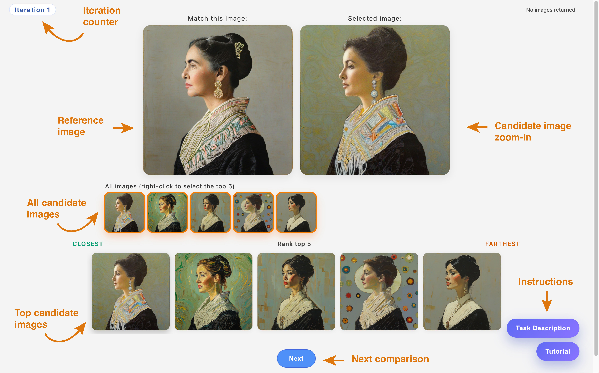
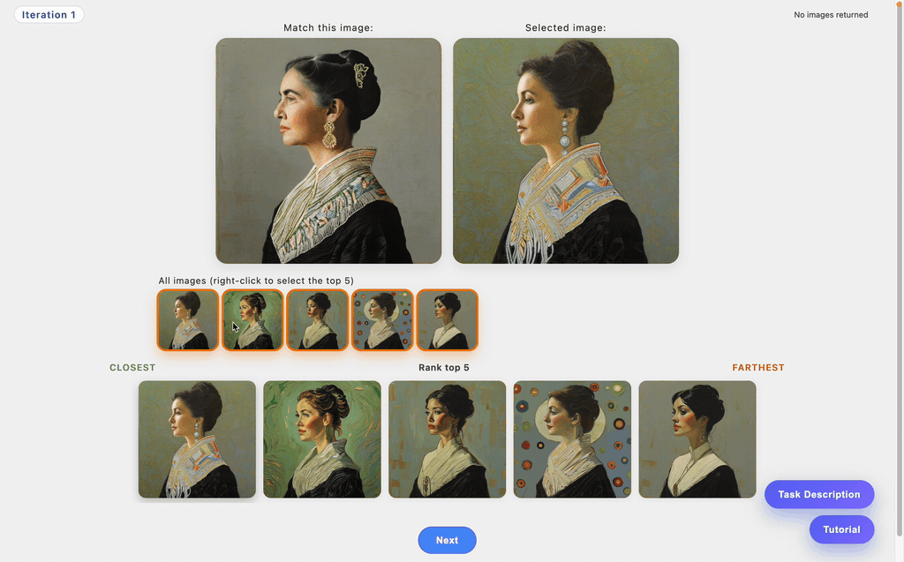
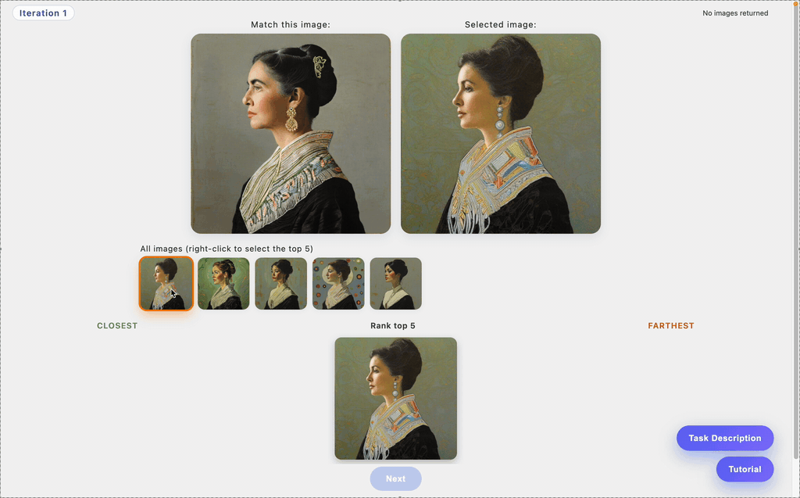

1. Interface Overview
This interface combines image selection and ranking.

- An iteration counter in the top-left shows your current progress.
- The reference image at the top is labeled “Match this image”.
- The Selected image panel shows the candidate you are currently inspecting.
- The All images row lists every candidate available this iteration.
- The Rank top 5 area displays the images you have chosen to rank, ordered from Closest (left) to Farthest (right).
- The Next button at the bottom moves you forward after you complete your ranking.
- The Task Description and Tutorial buttons in the bottom-right let you revisit instructions at any time.
2. Image Zoom-In
You can zoom in to inspect images more closely.
- Click any candidate image to view it enlarged in the Selected image panel.
- The zoomed view updates automatically whenever you click a different candidate.

3. Image Selection and De-selection
Your first step is to choose up to five images for ranking.
- In the All images row, right-click an image to add it to the Rank top 5 selection.
- Selected images appear in the ranking row. Right-click again to remove one.
- You can adjust your selection at any time before proceeding.
- Only images in the Rank top 5 row will be ranked.

4. Ranking Images and Moving Forward
After selecting up to five images:
- Compare each candidate to the reference based on overall visual appearance and style.
- Arrange them from most similar (Closest) on the left to least similar (Farthest) on the right.
- If two feel equally similar, place the one that seems slightly closer overall toward the left.
- When satisfied with the order, click Next to proceed to the next iteration.
5. Instructions
The task description and this interface tutorial are available at any time.
To access them, click the buttons located in the bottom-right corner of the interface.